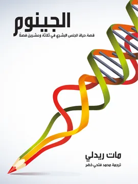

الجينوم: قصة حياة الجنس البشري في ثلاثة وعشرين فصلًا

قراءة عربية أصلية محددة النطاق في الصفحات 11 إلى 16 من ملف PDF المرتبط، وليست تلخيصا كاملا للكتاب. نناقش ما تدعمه هذه المقاطع فقط.
تمهيد: حين اكتمل فك رموز الجينوم البشري كله
يقول مات ريدلي في تمهيده إنه عندما بدأ تأليف هذا الكتاب كان الجزء الأكبر من الجينوم البشري غير مكتشف بعد، وكان ما يقرب من ثمانية آلاف من الجينات قد حددت على نحو تقريبي، لكن الطفرة الحقيقية التي مكنت من القراءة السريعة للجينوم البشري كاملًا كانت تنتظرنا في المستقبل. وفي غضون أقل من عام واحد اكتملت المهمة الهائلة؛ فقد فك علماء من جميع أرجاء العالم رموز الجينوم البشري الكامل وكتبوا محتوياته ونشروها على الإنترنت لتكون متاحة لكل من يرغب في قراءتها، وبمقدور أي شخص أن يحمل التعليمات من على الشبكة. ويعرض جانبًا من قصة السباق بين المشروع الحكومي وأسلوب «بندقية الصيد» الذي قال المسئولون إنه لن ينجح أبدًا. ويؤكد أننا للمرة الأولى بصدد إدراك مدى ضآلة ما نعرفه عن أنفسنا، وأن الذي لم يكن بإمكانه التنبؤ به هو ذلك الغزو المدوي للمعرفة الجينية في السنوات القليلة القادمة، وأثره في فهمنا لأنفسنا ولتاريخ الجنس البشري.
زاوية وحدود القراءة
قراءة موجزة من ص ١١ إلى ص ١٦ من أصل ٣٦٦ صفحة، تعرض تمهيد الكتاب، لا الكتاب كاملًا.
الطبعة والقراءة
هذه الترجمة العربية صادرة ومتاحة مجانًا بموجب اتفاق قانوني بين مؤسسة هنداوي والمؤلف مات ريدلي، عناية فليسيتي برايان أسوشيتس ليمتد. حقوق الترجمة محفوظة لمؤسسة هنداوي.
تنزيل PDF المجاني ↓ القراءة والمصدر الرسمي ↗